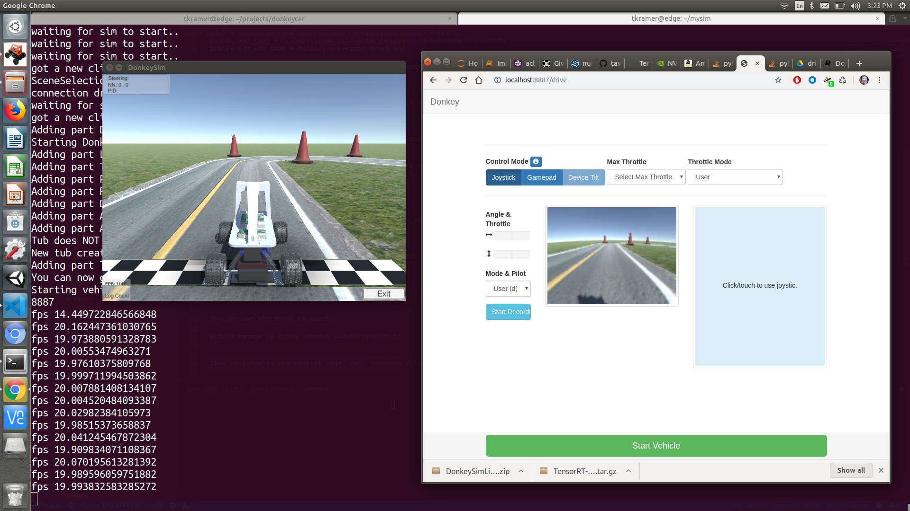

Donkey Simulator
The Donkey Gym project is a OpenAI gym wrapper around the Self Driving Sandbox donkey simulator (sdsandbox). When building the sim from source, checkout the donkey branch of the sdsandbox project.
The simulator is built on the the Unity game platform, uses their internal physics and graphics, and connects to a donkey Python process to use our trained model to control the simulated Donkey.
Installation Video:
Here's some videos to help you through the installation.
Linux: https://youtu.be/J6Ll5Obtuxk
Windows: https://youtu.be/wqQMmHVT8qw
My Virtual Donkey
There are many ways to use the simulator, depending on your goals. You can use the simulator to get to know and use the standard Donkeycar drive/train/test cycle by treating it as virtual hardware. You will collect data, drive, and train using the same commands as if you were using a real robot. We will walk through that use-case first.

Install
- Download and unzip the simulator for your host pc platform from Donkey Gym Release.
- Place the simulator where you like. For this example it will be ~/projects/DonkeySimLinux. Your dir will have a different name depending on platform.
- Complete all the steps to install Donkey on your host pc.
- Setup DonkeyGym:
cd ~/projects
git clone https://github.com/tawnkramer/gym-donkeycar
cd gym-donkeycar
conda activate donkey
pip install -e .[gym-donkeycar]
- You may use an existing ~/mycar donkey application, or begin a new one. Here we will start fresh:
donkey createcar --path ~/mysim
cd ~/mysim
- Edit your myconfig.py to enable donkey gym simulator wrapper, replace
<user-name>and the other parts of the path:
DONKEY_GYM = True
DONKEY_SIM_PATH = "/home/<user-name>/projects/DonkeySimLinux/donkey_sim.x86_64"
DONKEY_GYM_ENV_NAME = "donkey-generated-track-v0"
Note: your path to the executable will vary depending on platform and user. Windows: DonkeySimWin/donkey_sim.exe Mac OS: DonkeySimMac/donkey_sim.app/Contents/MacOS/donkey_sim Linux: DonkeySimLinux/donkey_sim.x86_64
Drive
You may use all the normal commands to manage.py at this point. Such as:
python manage.py drive
This should start the simulator and connect to it automatically. By default you will have a web interface to control the donkey. Navigate to http://localhost:8887/drive to see control page.
On Ubuntu Linux only, you may plug in your joystick of choice.
If it mounts as /dev/input/js0 then there's a good chance it will work.
Modify myconfig.py to indicate your joystick model and use the --js arg to run.
python manage.py drive --js
As you drive, this will create a tub of records in your data dir as usual.
Train
You will not need to rsync your data, as it was recorded and resides locally. You can train as usual:
donkey train --tub ./data --model models/mypilot.h5
Test
You can use the model as usual:
python manage.py drive --model models/mypilot.h5
Then navigate to web control page. Set Mode and Pilot to Local Pilot(d). The car should start driving.
Sample Driving Data
Here's some sample driving data to get you started. Download this and unpack it into your data dir. This should train to a slow but stable driver.
API
Here's some info on the api to talk to the sim server. Make a TCP client and connect to port 9091 on whichever host the sim is running. The server sends and receives UTF-8 encoded JSON packets. Each message must have a "msg_type" field. The sim will end all JSON packets with a newline character for termination. You don't have to end each packet with a newline when sending to the server. But if it gets too many messages too quickly it may have troubles. Check the player log file for JSON parse errors if you are having troubles.
Get Protocol Version
Client=>Sim. Ask for the version of the protocol. Will help know when changes are made to these messages.
Fields: None
Example:
{
"msg_type" : "get_protocol_version"
}
Protocol Version
Sim=>Client. Reply for the version of the protocol. Currently at version 2.
Fields:
- version : string integer
Example:
{
"msg_type" : "protocol_version",
"version" : "2",
}
Scene Selection Ready
Sim=>Client. When the Menu scene is finished loading this will be sent. After this point, the sim can honor the Scene Loading message. (Menu only)
Fields: None
Example:
{
"msg_type" : "scene_selection_ready"
}
Get Scene Names
Client=>Sim. Ask names of the scene you can load. (Menu only)
Fields: None
Example:
{
"msg_type" : "get_scene_names"
}
Scene Names
Sim=>Client. Sim will reply with list of scene names.
Fields:
- scene_names : array of scene names
Example:
{
"msg_type" : "scene_names"
"scene_names" : [ "generated_road", "warehouse", "sparkfun_avc". "generated_track" ]
}
Load Scene
Client=>Sim. Asks the sim to load one of the scenes from the Menu screen. (Menu only)
Fields:
scene_name : generated_road | warehouse | sparkfun_avc | generated_track ( or whatever list the sim returns from get_scene_names)
Example:
{
"msg_type" : "load_scene",
"scene_name" : "generated_track"
}
Scene Loaded
Sim=>Client. Once scene is loaded, in reply, you will get a:
{
"msg_type" : "scene_loaded"
}
Car Loaded
Sim=>Client. Once the sim finishes loading your car, it sends this message. The car is loaded for you automatically once the scene is loaded with an active client. Or a client make a connection.
Fields: None
Example:
{
"msg_type" : "car_loaded"
}
Car Config
Client=>Sim. Once loaded, you may configure your car visual details (scene only)
Fields:
- body_style : donkey | bare | car01 | cybertruck | f1
- body_r : string value of integer between 0-255
- body_g : string value of integer between 0-255
- body_b : string value of integer between 0-255
- car_name : string value car name to display over car. Newline accepted for multi-line.
- font_size : string value of integer between 10-100 to set size of car name text
Example:
{
"msg_type" : "car_config",
"body_style" : "car01",
"body_r" : "128",
"body_g" : "0",
"body_b" : "255",
"car_name" : "Your Name",
"font_size" : "100"
}
Camera Config
Client=>Sim. Once the scene is loaded, you may configure your car camera sensor details
Fields:
- fov : string value of float between 10-200. Sets the camera field of view in degrees.
- fish_eye_x : string value of float between 0-1. Causes distortion warping in x axis.
- fish_eye_y : string value of float between 0-1. Causes distortion warping in y axis.
- img_w : string value of integer between 16-512. Sets camera sensor image width.
- img_h : string value of integer between 16-512. Sets camera sensor image height.
- img_d : string value of integer 1 or 3. Sets camera sensor image depth. In case of 1, you get 3 channels but all identicle with greyscale conversion done on the sim.
- img_enc : Image format of data JPG | PNG | TGA
- offset_x : string value of float. Moves the camera left and right axis.
- offset_y : string value of float. Moves the camera up and down.
- offset_z : string value of float. Moves the camera forward and back.
- rot_x : string value of float. Degrees. Rotates camera around X axis.
Example:
{
"msg_type" : "cam_config",
"fov" : "150",
"fish_eye_x" : "1.0",
"fish_eye_y" : "1.0",
"img_w" : "255",
"img_h" : "255",
"img_d" : "1",
"img_enc" : "PNG",
"offset_x" : "0.0",
"offset_y" : "3.0",
"offset_z" : "0.0",
"rot_x" : "90.0"
}
Note: You can add an other camera by changing the msg_type to "cam_config_b"
Control Car
Client=>Sim. Control throttle and steering.
Fields:
- steering : string value of float between -1 to 1. Maps to full left or right, 16 deg from center.
- throttle : string value of float between -1 to 1. Full forward or reverse torque to wheels.
- brake : string value of float between 0 to 1.
Example:
{
"msg_type" : "control",
"steering" : "0.0",
"throttle" : "0.3",
"brake" : "0.0"
}
Telemetry
Sim=>Client. The sim sends this message containing camera image and details about vehicle state. These come at a regular rate set in the sim. Usually about 20 HZ.
Fields:
- steering_angle : Last steering applied. Why not just steering like control? idk.
- throttle : Last throttle applied.
- speed : magnitude of linear velocity.
- image : a BinHex encoded binary image. Use PIL.Image.open(BytesIO(base64.b64decode(imgString)))
- imageb : (optionnal) same as above but for the second camera
- lidar : (optionnal) list of lidar points in the following format: {d: distanceToObject, rx: rayRotationX, ry: rayRotationY}
- hit : name of the last object struck. Or None if no object hit.
- accel_x : x acceleration of vehicle.
- accel_y : y acceleration of vehicle.
- accel_z : z acceleration of vehicle.
- gyro_x : x gyro acceleration.
- gyro_y : y gyro acceleration.
- gyro_z : z gyro acceleration.
- gyro_w : w gyro acceleration.
- pitch : pitch of the car in degrees.
- roll : roll of the car degrees.
- yaw : yaw of the car degrees.
- activeNode : Progress on track (not working properly with multiple car for the moment)
- totalNodes : number of nodes on track
- pos_x : (training only) x world coordinate of vehicle.
- pos_y : (training only) y world coordinate of vehicle.
- pos_z : (training only) z world coordinate of vehicle.
- vel_x : (training only) x velocity of vehicle.
- vel_y : (training only) y velocity of vehicle.
- vel_z : (training only) z velocity of vehicle.
- cte : (training only) Cross track error. The distance from the car to the path in the center of the right most lane or center of the track (depends on the track)
Example:
{
"msg_type" : "telemetry",
"steering_angle" : "0.0",
"throttle" : "0.0",
"speed" : "1.0",
"image" : "0x123...",
"hit" : "None",
"pos_x" : "0.0",
"pos_y" : "0.0",
"pos_z" : "0.0",
"accel_x" : "0.0",
"accel_y" : "0.0",
"accel_z" : "0.0",
"gyro_x" : "0.0",
"gyro_y" : "0.0",
"gyro_z" : "0.0",
"gyro_w" : "0.0",
"pitch" : "0.0",
"roll" : "0.0",
"yaw" : "0.0",
"activeNode" : "5"
"totalNodes" : "26"
"cte" : "0.5"
}
Reset Car
Client=>Sim. Return the car to the start point.
Fields: None
Example:
{
"msg_type" : "reset_car"
}
Set Car Position
Client=>Sim. Move the car to the given position (training only)
Fields:
- pos_x : x world coordinate.
- pos_y : y world coordinate.
- pos_z : z world coordinate.
- qx : (optionnal) quaternion x
- qy : (optionnal) quaternion y
- qz : (optionnal) quaternion z
- qw : (optionnal) quaternion w
Example:
{
"msg_type" : "set_position"
"pos_x" : "0.0",
"pos_y" : "0.0",
"pos_z" : "0.0"
}
or:
{
"msg_type" : "set_position"
"pos_x" : "0.0",
"pos_y" : "0.0",
"pos_z" : "0.0",
"qx" : "0.0",
"qy" : "0.2",
"qz" : "0.0",
"qw" : "1.0"
}
Get node position and rotation
Client=>Sim. Ask for a node_position packet
Fields:
- index : node index
Example:
{
"msg_type": "node_position",
"index": "0"
}
Node position and rotation
Sim=>Client. node_position packet (received after sending a node_position packet)
Fields:
- pos_x : x world coordinate.
- pos_y : y world coordinate.
- pos_z : z world coordinate.
- qx : (optionnal) quaternion x
- qy : (optionnal) quaternion y
- qz : (optionnal) quaternion z
- qw : (optionnal) quaternion w
Example:
{
"msg_type": "node_position",
"Qx": "0",
"Qy": "0",
"Qz": "0",
"Qw": "1",
"pos_x": "0",
"pos_y": "0",
"pos_z": "0"
}
Exit Scene
Client=>Sim. Leave the scene and return to the main menu screen.
Fields: None
Example:
{
"msg_type" : "exit_scene"
}
Quit App
Client=>Sim. Close the sim executable. (Menu only)
Fields: None
Example:
{
"msg_type" : "quit_app"
}